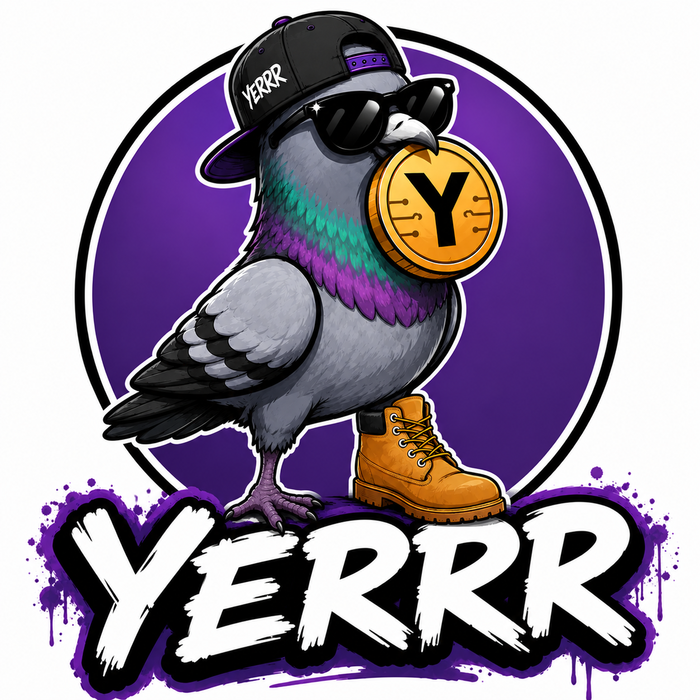

Total Supply
To be announced before launch.
Born in the streets. Built for the community. One boot, one bare foot, and a whole lot of attitude.

YERRR is a community-driven meme token built around a street-smart pigeon that refuses to blend in. The mascot is confident, funny, and instantly recognizable.
The project is currently in its early build phase. No token is live yet, and no official contract address has been published.
Final numbers will be published before launch.
To be announced before launch.
Launch details and lock terms will be posted publicly.
Built to grow through culture, memes, and participation.
Brand, mascot, domain, website, whitepaper, and social channels.
Create the token, publish verified contract information, and open community channels.
Community campaigns, listings, partnerships, memes, and merchandise.
Official social links will be added here after the accounts are created.
No. The website and brand are being built first. The official contract address will only be posted after launch.
The final chain has not been announced on this website yet.
Nowhere yet. Ignore unofficial links or contract addresses until they appear on this website and official social accounts.
No. Meme tokens are highly risky. Do your own research and never spend more than you can afford to lose.